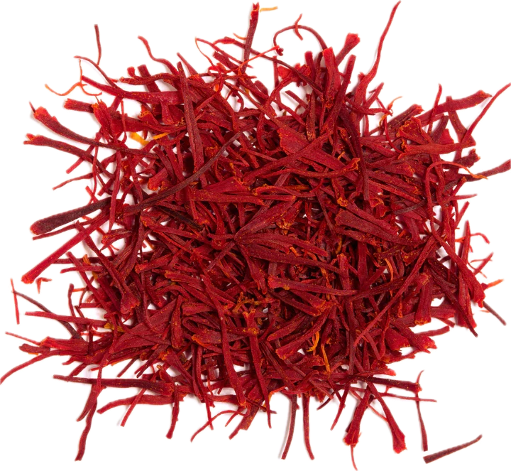

Crocus sativus
Overview
Saffron is a spice derived from the stigma of the saffron crocus flower, native to Southwest Asia. It is one of the most expensive spices in the world, prized for its vibrant color, distinctive flavor, and aromatic properties. Saffron has a sweet, floral flavor with hints of honey and hay.
Cultural Overlap
Saffron is used in cuisines around the world, particularly in Indian, Persian, Spanish, and Middle Eastern cuisines. It is used to flavor and color rice dishes, soups, stews, sauces, desserts, and beverages such as tea and coffee. Saffron also has cultural significance in traditional medicine, where it is believed to have various health benefits and medicinal properties.